CHS Boys Soccer Program Hub — Coach Guide
Covington High School
Covington High School Boys Soccer
Coach Guide to the Program Hub
How to run the season in the hub: the schedule, results, roster, announcements and everything the hub works out for you.
Signing in
Open the hub and choose Coach/Player Access in the left menu, then type your four-digit PIN. Your PIN is on your card under Manage → Staff; if you do not have one, ask the head coach. Sign out from the bottom of the menu when you are done on a shared computer.
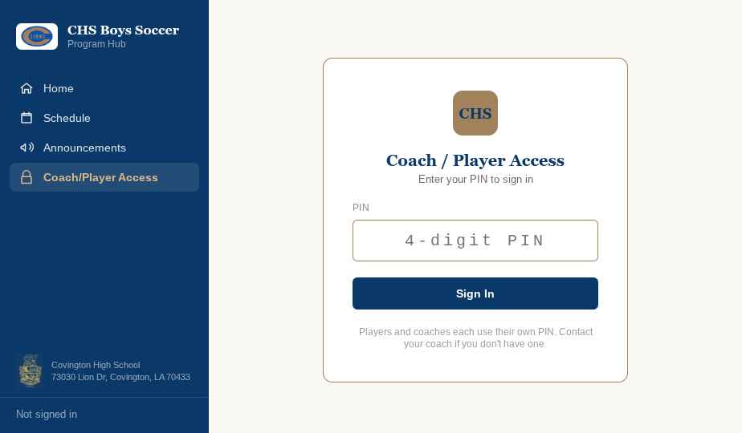
Players use the same screen with their own PIN and get a read-only view of their team.
The one idea behind the whole hub
You type a fact in exactly one place. The schedule says a game exists. The game report says what happened in it. Everything else — scores, player stats, team stats, power ratings, goal progress, program history — is worked out from those two.
So there is never a score to type twice, and if a number looks wrong the fix is always in the game report, never on the page showing it.
The season picker at the top of every page drives the whole hub at once. Leave it on the current season for day-to-day work; change it to look back at a past year.
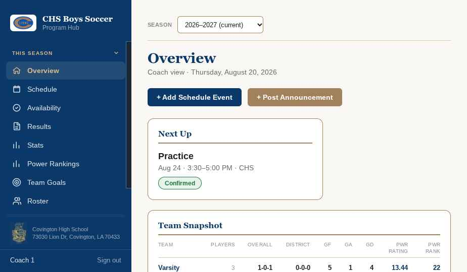
The overview: your next event, a snapshot row per team, recent announcements, and a comparison against last season.
1. Adding the season and the schedule
The schedule is the backbone. Every game that can be reported on, every practice players can RSVP to, and every fixture that appears in results and stats starts here.
Starting a new season
You do not create a season by hand. Closing the old one creates the new one and offers to copy last year's fixtures across (see section 8). If the hub is brand new, the current season is already there — check its label under History → Seasons.
Adding an event
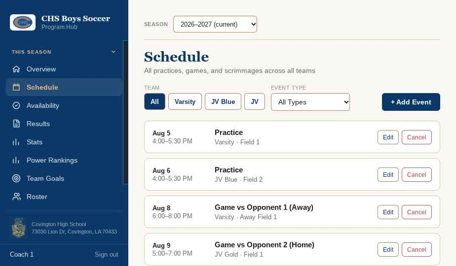
This Season → Schedule. Filter by team or event type; + Add Event is on the right.
- Click + Add Event.
- Pick the type: practice, game, scrimmage, classroom session or other.
- Pick the team, or All if it applies to the whole program.
- For a game or scrimmage, fill in the opponent, the game number and whether you are home or away. Start typing an opponent's name and the hub offers the ones you have played before — pick from the list so the spelling stays consistent.
- Tick district game if it counts toward district standing. Tick playoff game for postseason fixtures and choose the round.
- Set the date, start and end time, and location.
- Click Add. The event's title is written for you.
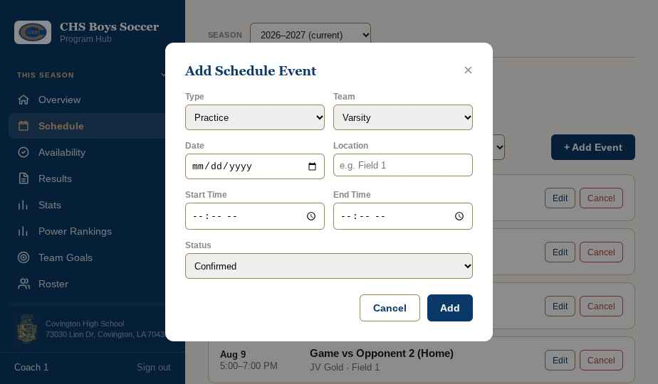
Choosing Game or Scrimmage adds the opponent, game number, home/away and district fields.
Plans change: use Edit to move a game, and Cancel to call one off. Cancelling keeps the event on the schedule with a cancelled marker rather than deleting it, so nobody wonders where it went.
2. Entering a game result
This is the one job that feeds everything else, and the one worth doing carefully. It is a desktop task — the player stats grid is wide.
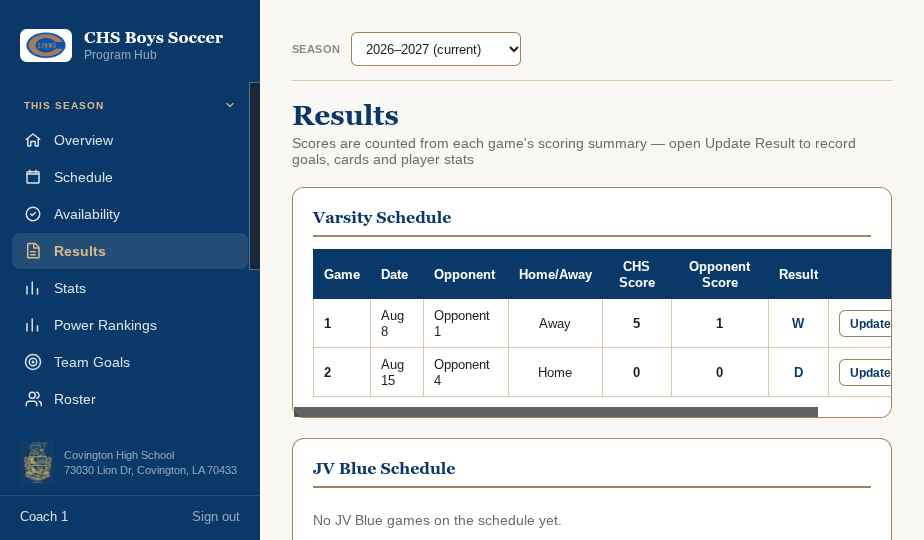
This Season → Results, one table per team. The scores here are counted, not typed — you cannot edit them on this page.
Find the game and click Update Result. The report has four sections.
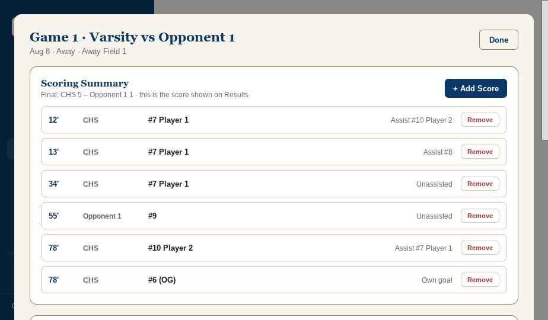
The scoring summary. The line above it shows the score the rest of the hub will use.
Scoring summary — this is the score
One line per goal: which team scored, the shirt number, the minute, and the assist if there was one. Own goals get their own tick box, which credits the goal to the other team while keeping it off the scorer's tally. Add every goal in the game, both teams. The result on every other page is counted from these lines.
A goalless game needs the tick box
If the game genuinely finished 0–0, tick this game finished 0–0. An empty summary on its own means "not reported yet", not nil-nil, and the game will not count anywhere until you say so.
Discipline
Yellow and red cards, by team and shirt number. These appear in the players' card totals.
Team stats and player stats
Corners, fouls, possession and the rest for the team; then a row per player for halves played, shots, passes, tackles and saves. Goals, assists, clean sheets and cards are filled in for you from the sections above — the shaded columns are not typed. Player stats are Varsity only; other teams record the scoring summary and discipline and nothing more.
You do not have to fill everything in at once, and nothing is lost if you only get to the score. Come back and add player stats later; the hub keeps the counts separate and says on each stats card how many games fed each average.
3. Managing the roster
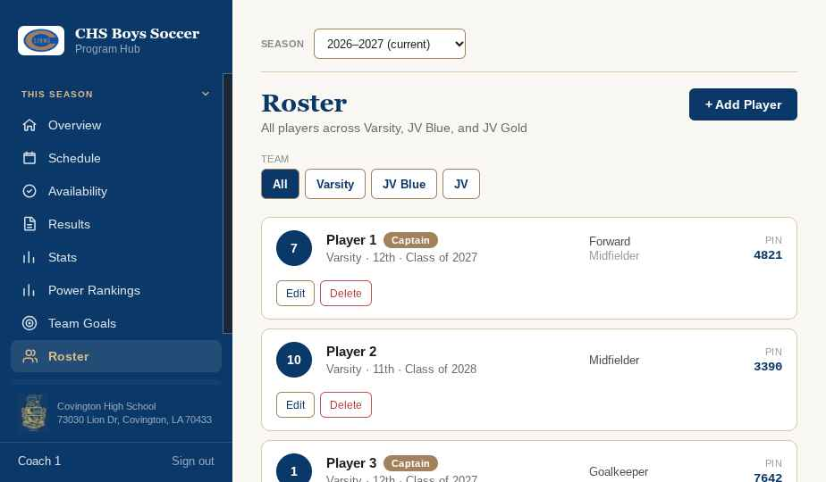
This Season → Roster. Filter by team along the top; each card shows the player's PIN.
- Click + Add Player.
- Name, team, jersey number, positions, grade and graduation year.
- Give them a four-digit PIN. This is what they sign in with, so write it down before you save.
- Tick team captain this season for captains. More than one per team is fine.
- Click Add.
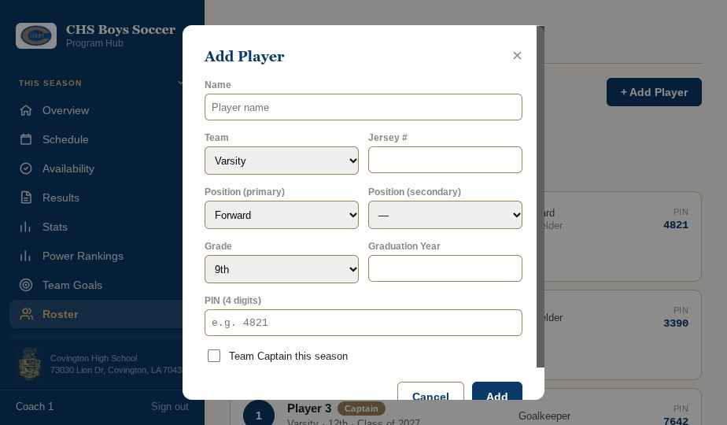
Jersey number matters: game reports are entered by shirt number.
Use Edit for a change of number or a move between squads. Only Delete a player added by mistake — a player who leaves mid-season is better left in place so the games they played still add up. At the end of the year the close-season steps carry the roster forward and drop the seniors for you.
4. Posting an announcement
Announcements are the fastest way to reach everyone: they show on the public home page and inside the hub. Schedule changes post themselves; anything else is yours to write.
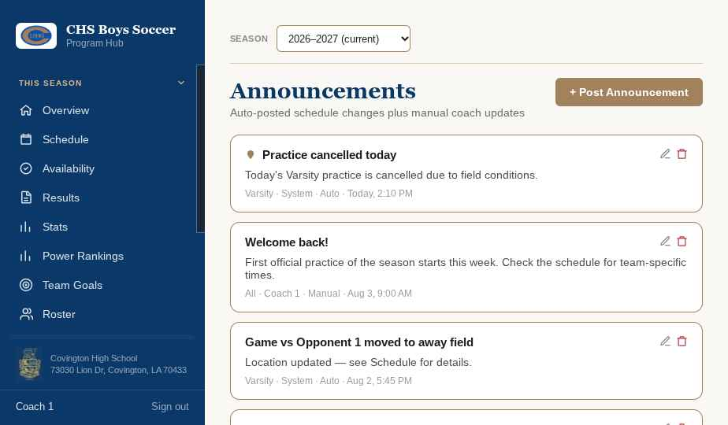
Manage → Announcements. The pin marks a post held at the top.
- Click + Post Announcement.
- Write a title and the message.
- Choose the team it is for, or All.
- Tick pin this announcement for something that must stay visible, then click Add.
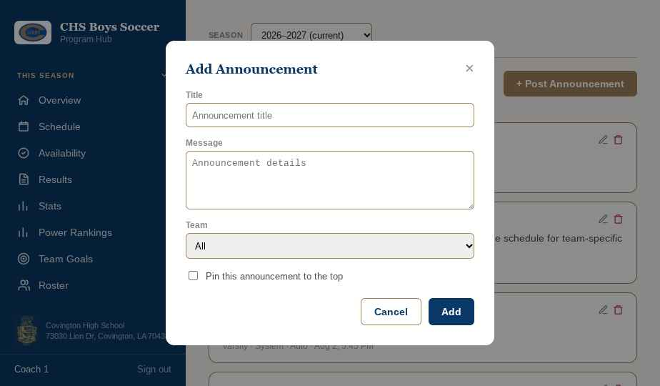
This works on a phone, so you can post from the sideline.
Unpin or delete a post once it is stale — the home page is the first thing families see.
5. Adding teams and opponents
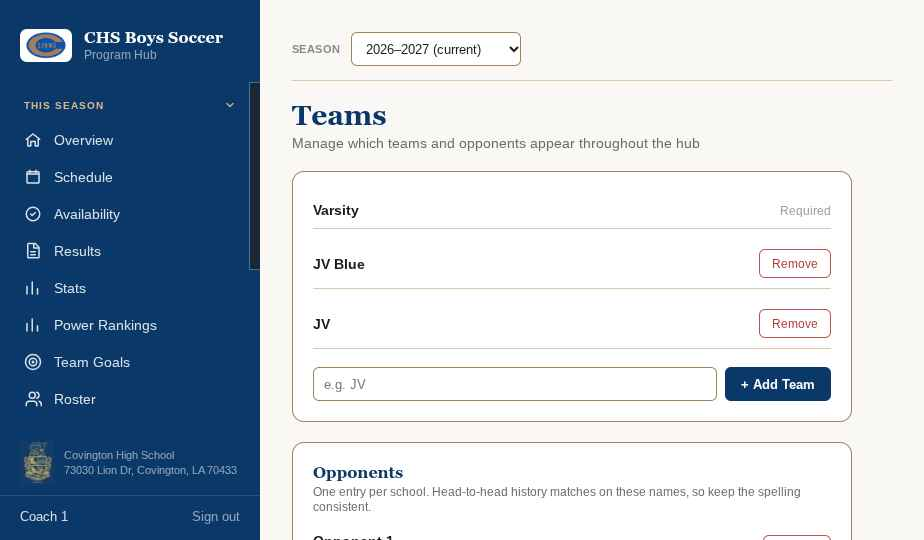
Manage → Teams. Teams above, opponents below.
Type the name and click + Add Team. That squad then appears in every filter, table and dropdown in the hub. Varsity cannot be removed; anything else can, though removing a team does not clear the players and games already tagged with it, so rename rather than remove when a squad is just being called something new.
The opponents list underneath is what makes all-time head-to-head records work. One entry per school, spelled the same way every year. An opponent that already appears on a schedule cannot be removed — rename it instead, and every past game follows.
6. Adding staff and PINs
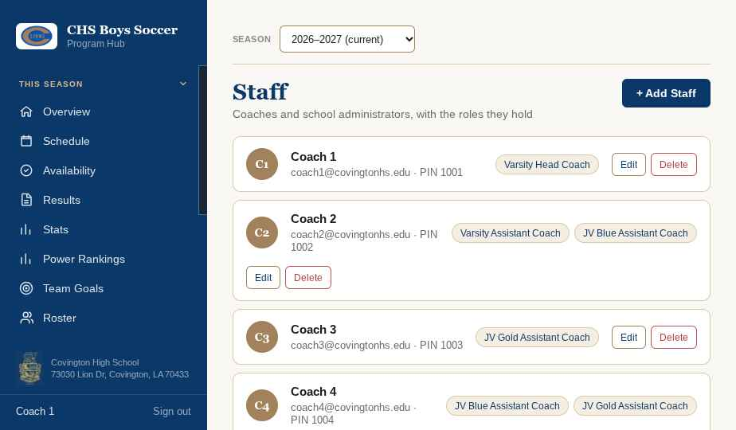
Manage → Staff. Each card carries the person's roles and their sign-in PIN.
- Click + Add Staff and enter their name, and email if you have it.
- Click Add Role. A role is either a team plus a position — say JV Blue, assistant coach — or a school role such as principal or athletic director.
- Add as many roles as the person holds. Someone can be Varsity assistant and JV Gold head coach at once.
- Click Add. The hub picks the next free four-digit PIN and shows it on their card.
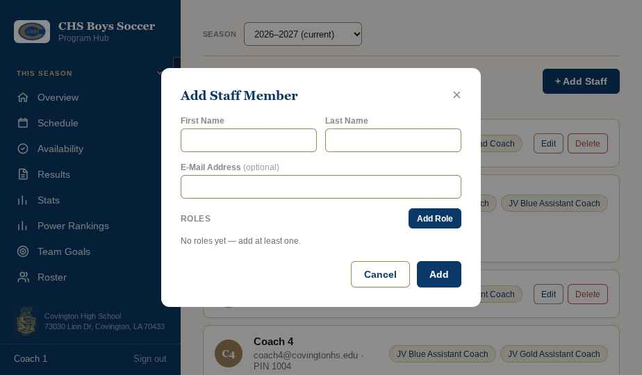
You do not choose the PIN — the hub assigns it, so no two people can collide.
Adding your principal and athletic director here means their names print on the game day roster sheet automatically. Anyone with a staff card can sign in as a coach and edit, so delete people who leave the program.
7. Setting team goals
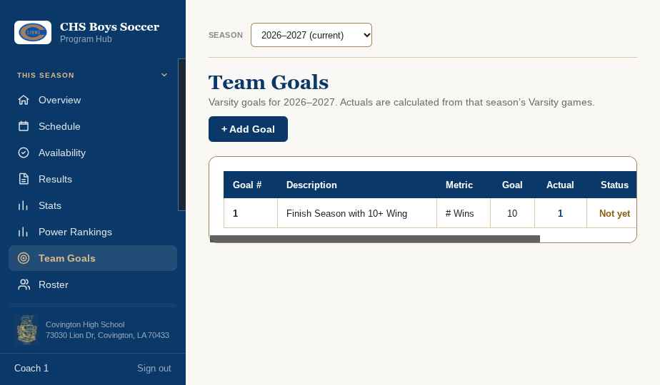
This Season → Team Goals. Varsity only, and tied to the season showing in the picker.
- Click + Add Goal.
- Write the goal in your own words — "finish the season with 10 or more wins".
- Choose the metric the hub should measure: wins, losses, goals for, shutouts, district record, power rating and so on.
- Type the target. For district record, type it whole, as 5-1-0.
The actual column fills itself in from the season's Varsity games, and status tells you whether you are there yet. The hub knows which direction counts as good: more wins is better, fewer goals conceded is better, and a power ranking of 1st is better than 20th even though the number is smaller. A target for number of ties shows no verdict, because neither more nor fewer is honestly the goal.
Goals stay with the season that set them. Closing the season does not wipe them, so next year you can look back at what you aimed for and whether you got there.
8. Closing a season
Once a year, when the last game is played and every result is in. Closing locks the record into program history and starts the next season.
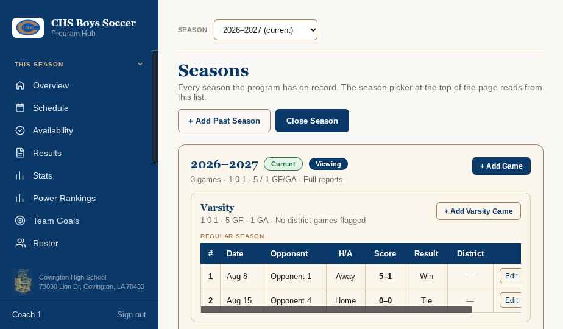
History → Seasons, then Close Season. Check every game has a result first.
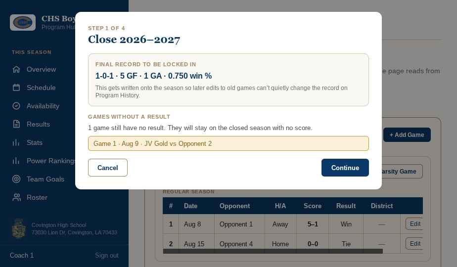
Four steps, and it names any game still missing a result before you go on.
- Check the record. The figures shown are what gets locked in. Any game without a result is listed — go back and report it if it matters.
- District standing. Defaults to not recorded, deliberately. Set 1st only if you actually won the district; that is what puts the champions badge on program history.
- The new season. Confirm its label and choose what to copy over: district fixtures, the whole schedule, or nothing. Copied games arrive with no date and home/away flipped, ready for you to set.
- The roster. Seniors are already unticked. Untick anyone else who is not coming back. Current captains are recorded as an honor for the season being closed.
Afterwards the closed season's record is fixed: editing an old game will not quietly move a past year's record. Staff, teams and opponents carry over untouched.
9. Checking RSVPs
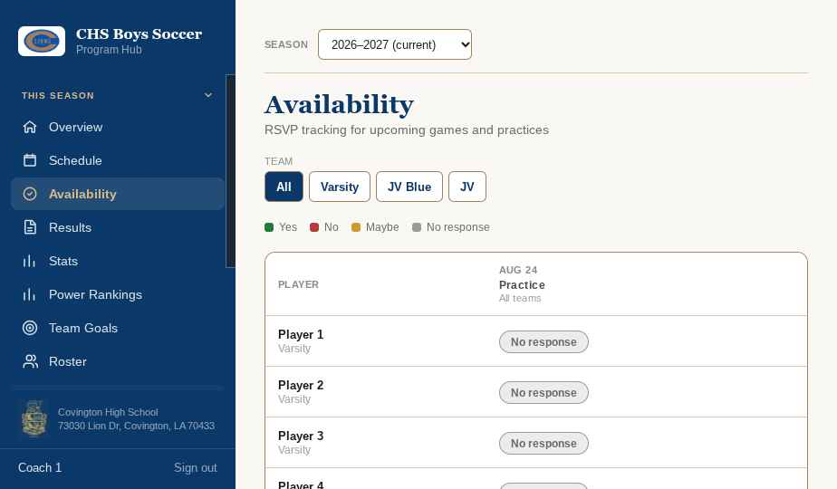
This Season → Availability. Players down the side, upcoming events across the top.
Players answer yes, no or maybe from their own sign-in, usually on a phone. The tracker shows where everyone stands; filter by team along the top. A dash means the event does not apply to that player's squad.
Only upcoming events appear. An answer locks at kickoff, so nobody can change their mind after the fact and the attendance report cannot shift.
For a summary of who has been answering, go to Manage → Reports, attendance tab. It covers events that have already happened and gives a yes percentage per event and per player. Someone who never answered is counted in its own column and is not marked against them.
10. Reading the stats and power ratings
Nothing on either page is typed. Both are worked out from the game reports, so the way to change a number is to correct the report behind it.
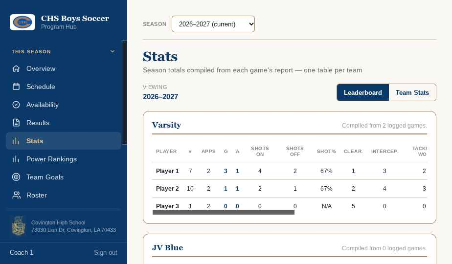
This Season → Stats, one table per team, with a leaderboard tab and a team stats tab.
Varsity tables carry the full set — appearances, goals, assists, shooting, passing, tackles, saves, clean sheets and goals against. Other teams show goals, assists, cards and clean sheets, because those games record only the scoring summary and discipline.
Each team stats card says how many games fed it, and it may be three different counts: goals per game over the games with a score, shots per game over the games where player stats were entered, corners and fouls over the games where team stats were filled in. N/A means that section has not been logged, not that the number is zero.
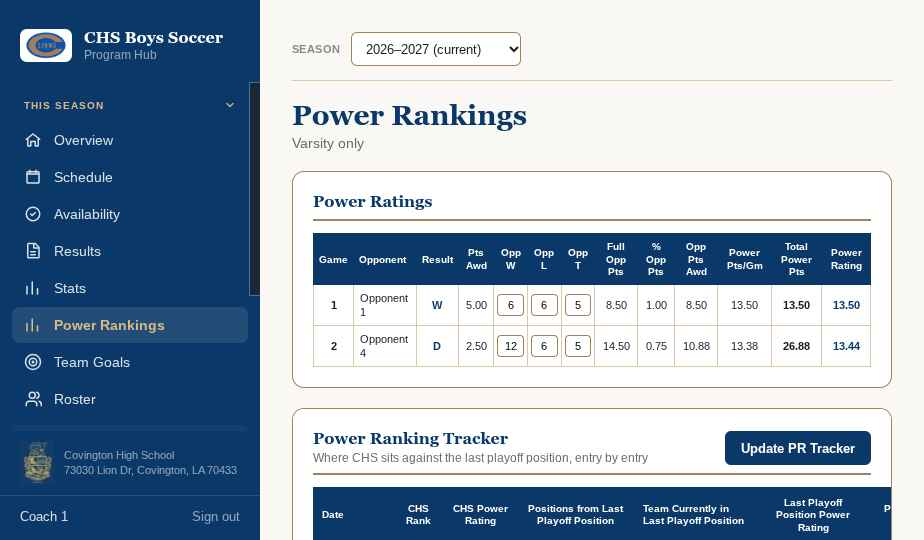
This Season → Power Rankings, Varsity only.
One row per regular-season game. The hub knows your result; the one thing you type is each opponent's win/loss/tie record, and the rating updates as you keep those current. Playoff games are left out on purpose — the rating is what decides seeding, so playoff results must not feed back into it.
Underneath, Update PR Tracker records where the state has you on a given date, against the team sitting in the last playoff position, so you can watch the gap through the season.
What not to do
Do not clear the browser's history or site data on the record computer.
The hub keeps the season in that browser. Clearing it erases the season.
Do not enter results on a different computer.
Each machine keeps its own copy and they never merge. All data entry happens on the one agreed computer.
Do not delete a player or an opponent to tidy up.
Their games and history are attached to that name. Rename, or leave them alone.
Do not close a season until every result is in.
The record is locked at that moment. Games reported afterwards will not change it.
Do not share PINs.
A coach PIN can edit everything, including past seasons.
If something looks wrong
What you are seeing
Where to look
A game is missing from results
It is not on the schedule, or it is on a different team. Check This Season → Schedule.
A played game shows no score
Its report has no goals in it. Open Update Result and add them — or tick the 0–0 box if that is the score.
The score is wrong
A goal is missing, doubled, or credited to the wrong team in the scoring summary. Fix it there; every page follows.
A player's stats are empty
Their half-played boxes were never ticked in that game's report, or the game was not Varsity.
A number reads N/A
That section has not been logged in any game yet. It is not a zero.
The district record looks short
A fixture is missing its district tick. Edit the event on the schedule.
The power rating has not moved
The opponent's record has not been typed for that game, or the game was a playoff, which is excluded on purpose.
The page looks like last year
The season picker at the top is on a past season. Set it back to current.
Everything is empty on this computer
You are not on the record computer, or its site data was cleared. Nothing is recoverable from here.
Season start — one page
- Confirm the season label and that it is the current one — History → Seasons
- Check the team list is right for this year — Manage → Teams
- Add and remove staff, note their PINs — Manage → Staff
- Finish the roster: numbers, grades, PINs, captains — This Season → Roster
- Add every opponent you will face this year — Manage → Teams
- Enter the full schedule, ticking district games — This Season → Schedule
- Set this year's Varsity goals — This Season → Team Goals
- Hand out player PINs with the hub's address
- Post a welcome announcement
Season end — one page
- Report every remaining game, including any 0–0
- Finish the player stats on any Varsity game still part-filled
- Bring every opponent's record up to date — This Season → Power Rankings
- Record individual honors for the year — History → Seasons
- Check the captain ticks on the roster are correct
- Export the attendance and season stats reports and save them somewhere safe
- Run Close Season: check the record, set the district standing, name the new season, choose what to copy, carry the roster forward
- Confirm program history shows the year correctly
Words used in the hub
Game report
Everything recorded about one game — goals, cards, team stats, player stats. Opened with Update Result.
Reported
A game the hub counts as played: it has at least one goal in its summary, or a ticked 0–0, or a final score typed in from a past year.
Derived
Worked out by the hub rather than typed. Scores, stats, ratings and history are all derived.
Appearance
A half played. Two per game, ticked in the player stats section.
Clean sheet
A game the opponent did not score in, credited to the players who appeared.
GAA
Goals against average — goals conceded in the games a keeper played, divided by those games.
GF / GA / GD
Goals for, goals against, and the difference between them.
Win %
Wins plus half the ties, divided by games played.
Power rating
A per-game score built from your result and the strength of the opponent. Higher is better.
Power ranking
Your position in the state list. Lower is better — 1st is the top.
Snapshot
The record locked onto a season when it is closed. It cannot drift afterwards.
RSVP
A player saying yes, no or maybe to an event. Locks at kickoff.
Own goal
A goal credited to the other team. Recorded with a tick box so it counts in the score but not on the scorer's record.